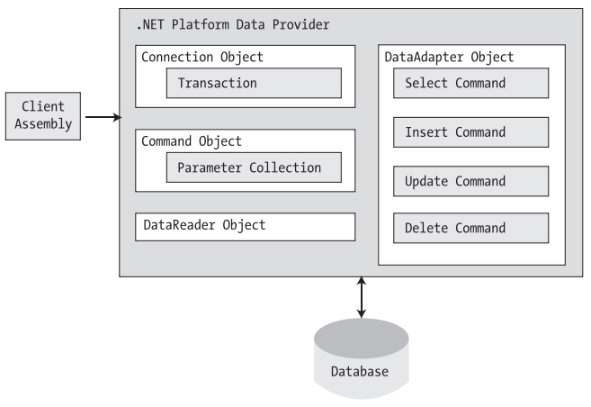

Chapter 22 - Data access with ADO.NET
Content
The .NET platform defines a number of namespaces that allow you to interact with local and remote data stores. Collectively speaking, these namespaces are known as ADO.NET.
The .NET platform supports numerous data providers, each of which is optimized to communicate with a specific database management system (Microsoft SQL Server, Oracle, MySQL, etc.).
The remaining part of this chapter examines how to programmatically interact with relational databases using your data provider of choice.
As you will see, ADO.NET provides two distinct ways to interface with a data source, often termed the connected layer and disconnected layer.
You will come to know the role of connection objects, command objects, data readers, data adapters, and numerous types within the System.Data namespace
(specifically, DataSet, DataTable, DataRow, DataColumn, DataView, and DataRelation).
Introduction to ADO.NET
The ADO.NET libraries can be used in two conceptually unique manners: connected or disconnected. When you are making use of the connected layer, your code base will explicitly connect to and disconnect from the underlying data store.
When you are using ADO.NET in this manner, you typically interact with the data store using connection objects, command objects, and data reader objects. As you will see later in this chapter,
data readers provide a way to pull records from a data store using a forward-only, read-only approach (much like a fire-hose cursor).
The disconnected layer, on the other hand, allows you to obtain a set of DataTable objects (contained within a DataSet) that functions as a client-side copy of the external data.
When you obtain a DataSet using a related data adapter object, the connection is automatically opened and closed on your behalf. As you would guess, this approach helps quickly free up connections for other callers.
Once the client receives a DataSet, it is able to traverse and manipulate the contents without incurring the cost of network traffic. As well, if the client wishes to submit the changes back to the data store,
the data adapter (in conjunction with a set of SQL statements) is used once again to update the data source, at which point the connection is closed immediately.
Understanding ADO.NET Data Providers
ADO.NET does not provide a single set of types that communicate with multiple database management systems (DBMSs). Rather, ADO.NET supports multiple data providers, each of which is optimized to interact with a specific DBMS.
The first benefit of this approach is that a specific data provider can be programmed to access any unique features of the DBMS. Another benefit is that a specific data provider is able to directly connect to the underlying engine of the DBMS
without an intermediate mapping layer standing between the tiers.
Simply put, a data provider is a set of types defined in a given namespace that understand how to communicate with a specific data source. Regardless of which data provider you make use of, each defines a set of class types that provide core functionality.
The below table documents some (but not all) of the core common objects.
| Connection |
Provides the ability to connect to and disconnect from the data store. Connection objects also provide access to a related transaction object. |
| Command |
Represents a SQL query or name of a stored procedure. Command objects also provide access to the provider's data reader object.
|
| DataReader |
Provides forward-only, read-only access to data. |
| DataAdapter |
Transfers DataSets between the caller and the data store. Data adapters contain a set of four internal command objects used to
select, insert, update, and delete information from the data store.
|
| Parameter |
Represents a named parameter within a parameterized query. |
| Transaction |
Performs a database transaction. |
Although the names of these types will differ among data providers (e.g., SqlConnection versus OracleConnection versus OdbcConnection versus MySqlConnection),
each object derives from the same base class that implements identical interfaces. Given this, you are correct to assume that once you learn how to work with one data provider,
the remaining providers are quite straightforward.

Microsoft-Supplied Data Providers
As of version 2.0, Microsoft's .NET distribution ships with numerous data providers, including a provider for Oracle, SQL Server, and ODBC-style connectivity.
The below table documents the namespace and containing assembly for each Microsoft ADO.NET data provider.
| Microsoft SQL Server |
System.Data.SqlClient |
System.Data.dll |
| Microsoft SQL Server Mobile |
System.Data.SqlServerCe |
System.Data.SqlServerCe.dll |
| Oracle |
System.Data.OracleClient |
System.Data.OracleClient.dll |
| OLE DB |
System.Data.OleDb |
System.Data.dll |
| ODBC |
System.Data.Odbc |
System.Data.dll |
There is no specific data provider that maps directly to the Jet engine (and therefore Microsoft Access). If you wish to interact with an Access data file, you can do so using the OLE DB or ODBC data provider.
The OLE DB data provider, which is composed of the types defined in the System.Data.OleDb namespace, allows you to access data located in any data store that supports the classic COM-based OLE DB protocol.
Using this provider, you may communicate with any OLE DB–compliant database simply by tweaking the "Provider" segment of your connection string. Be aware, however, that the OLE DB provider interacts with various COM objects behind the scenes,
which can affect the performance of your application. By and large, the OLE DB data provider is only useful if you are interacting with a DBMS that does not define a specific .NET data provider.
The Microsoft SQL Server data provider offers direct access to Microsoft SQL Server data stores, and only SQL Server data stores (version 7.0 and greater).
The System.Data.SqlClient namespace contains the types used by the SQL Server provider and offers the same basic functionality as the OLE DB provider. The key difference is that the SQL Server provider by passes the OLE DB layer and
thus gives numerous performance benefits. As well, the Microsoft SQL Server data provider allows you to gain access to the unique features of this particular DBMS.
Reads third-party ADO.NET Data providers at page 763 of textbook.
Understanding the Connected Layer of ADO.NET
The connected layer of ADO.NET allows you to interact with a database using the connection, command, and data reader objects of your data provider.
When you wish to connect to a database and read the records using a data reader object, you need to perform the following steps:
- Allocate, configure, and open your connection object.
- Allocate and configure a command object, specifying the connection object as a constructor argument or via the Connection property
- Call ExecuteReader() on the configured command object.
- Process each record using the Read() method of the data reader.
Working with Connection objects
The first step to take when working with a data provider is to establish a session with the data source using the connection object. .NET connection types are provided with a formatted connection string,
which contains a number of name/value pairs separated by semicolons. This information is used to identify the name of the machine you wish to connect to, required security settings, the name of the database on that machine,
and other data provider–specific information.
Here is connection string to establish a session with Northwind database:
Data Source=localhost;Initial Catalog=Northwind;Integrated Security=True
In this connection string, the "Data Source" name identifies the name of the machine that maintains the database. If this machine is computer that hosts the application, you can use localhost, (local), or simply . to assign value for "Data Source".
The Initial Catalog name refers to the database you are attempting to establish a session with (Pubs, Northwind, Cars, etc.). In this session, you use security mode is Integrated Security.
Once your construction string has been established, a call to Open() establishes your connection with the DBMS. In addition to the ConnectionString, Open(), and Close()members, a connection object provides a number of members that let you configure attritional settings regarding your connection,
such as timeout settings and transactional information.
Reads some members of the DbConnection base class at page 779 of textbook.
Working with ConnectionStringBuilders
Working with connection strings programmatically can be a bit clunky, given that they are often represented as string literals, which are difficult to maintain and error-prone at best.
Under .NET 2.0, the Microsoft-supplied ADO.NET data providers now support connection string builder objects, which allow you to establish the name/value pairs using strongly typed properties.
Consider the current Main()method:
static void Main(string[] args)
{
SqlConnectionStringBuilder cnStrBuilder = new SqlConnectionStringBuilder();
cnStrBuilder.UserID = "sa";
cnStrBuilder.Password = "";
cnStrBuilder.InitialCatalog = "Cars";
cnStrBuilder.DataSource = "(local)";
cnStrBuilder.ConnectTimeout = 30;
SqlConnection cn = new SqlConnection();
cn.ConnectionString = cnStrBuilder.ConnectionString;
cn.Open();
}
Working with Command objects
Now that you better understand the role of the connection object, the next order of business is to check out how to submit SQL queries to the database in question.
The SqlCommand type (which derives from DbCommand) is an OO representation of a SQL query, table name, or stored procedure. The type of command is specified using the CommandType property,
which may take any value from the CommandType enum:
public enum System.Data.CommandType
{
StoredProcedure, TableDirect,
Text
}
When creating a command object, you may establish the SQL query as a constructor parameter or directly via the CommandText property.
Also when you are creating a command object, you need to specify the connection to be used. Again, you may do so as a constructor parameter or via the Connection property:
static void Main(string[] args)
{
SqlConnection cn = new SqlConnection();
string strSQL = "Select * From Employees";
SqlCommand myCommand = new SqlCommand(strSQL, cn);
SqlCommand testCommand = new SqlCommand();
testCommand.Connection = cn;
testCommand.CommandText = strSQL;
}
Realize that at this point, you have not literally submitted the SQL query to the Northwind database, but rather prepped the state of the command type for future use.
The below table highlights some additional members of the DbCommand type.
| CommandTimeout |
Gets or sets the time to wait while executing the command before terminating the attempt and generating an error. The default is 30 seconds. |
| Connection |
Gets or sets the DbConnection used by this instance of the DbCommand. |
| Parameters |
Gets the collection of DbParameter types used for a parameterized query. |
| Cancel() |
Cancels the execution of a command. |
| ExecuteReader() |
Returns the data provider's DbDataReader object, which provides forward-only, read-only access to the underlying data. |
| ExecuteNonQuery() |
Issues the command text to the data store. |
| ExecuteScalar() |
A lightweight version of the ExecuteNonQuery()method, designed specifically for singleton queries (such as obtaining a record count). |
| ExecuteXmlReader() |
Microsoft SQL Server (2000 and higher) is capable of returning result sets as XML. As you might suspect, this method returns a System.Xml.XmlReader that
allows you to process the incoming stream of XML.
|
| Prepare() |
Creates a prepared (or compiled) version of the command on the data source. As you may know, a prepared query executes slightly faster and
is useful when you wish to execute the same query multiple times.
|
Working with Data Readers
Once you have established the active connection and SQL command, the next step is to submit the query to the data source. As you might guess, you have a number of ways to do so.
The DbDataReader type (which implements IDataReader) is the simplest and fastest way to obtain information from a data store. Recall that data readers represent a read-only, forward-only stream of data returned one record at a time.
Given this, it should stand to reason that data readers are useful only when submitting SQL selection statements to the underlying data store.
Data readers are useful when you need to iterate over large amounts of data very quickly and have no need to maintain an in-memory representation. For example, if you request 20,000 records from a table to store in a text file,
a better approach is to create a data reader that spins over each record as rapidly as possible. Be aware, however, that data reader objects maintain an open connection to their data source until you explicitly close the session.
Data reader objects are obtained from the command object via a call to ExecuteReader().When invoking this method, you may optionally instruct the reader to automatically close down the related connection object by specifying CommandBehavior.CloseConnection.
The following use of the data reader leverages the Read()method to determine when you have reached the end of your records (via a false return value). For each incoming record,
you are making use of the type indexer to print out LastName, FirstName and Title of each Employee. Also note that you call Close() as soon as you are finished processing the records, to free up the connection object.
static void Main(string[] args)
{
string cnnString = @"Data Source=localhost;Initial Catalog=Northwind;Integrated Security=True";
SqlConnection cn = new SqlConnection(cnnString);
cn.Open();
string query = "Select * from Employees";
SqlCommand cmd = new SqlCommand(query, cn);
SqlDataReader dr = cmd.ExecuteReader(CommandBehavior.CloseConnection);
Console.WriteLine("List of Employees");
while (dr.Read())
{
Console.Write("Employee {0}:\t", dr["EmployeeID"]);
Console.Write("Name: {0} {1}\t", dr["FirstName"], dr["LastName"]);
Console.WriteLine("Title: {0}", dr["Title"]);
}
dr.Close();
}
The indexer of a data reader object has been overloaded to take either a string (representing the name of the column) or an integer (representing the column’s ordinal position).
If you compile and run your project, you should be presented with a list of all employees in the Employees table of the Northwind database.
Reads obtaining multiple result sets using a Data Reader at page 784 of textbook.
Modify tables using Command objects
The ExecuteReader()method extracts a data reader object that allows you to examine the results of a SQL Select statement using a forward-only, read-only flow of information.
However, when you wish to submit SQL commands that result in the modification of a given table, you will call the ExecuteNonQuery()method of your command object.
This single method will perform inserts, updates, and deletes based on the format of your command text.
Reads example of inserting new records, delete existing records, and updating existing records at page 786 to 788 of textbook.
Working with Parameterized Command objects
The previous insert, update, and delete logic works as expected; however, note that each of your SQL queries is represented using hard-coded string literals.
As you may know, a parameterized query can be used to treat SQL parameters as objects, rather than a simple blob of text. Typically, parameterized queries execute much faster than a literal SQL string,
in that they are parsed exactly once (rather than each time the SQL string is assigned to the CommandText property). As well, parameterized queries also help protect against SQL injection attacks
(a well-known data access security issue).
ADO.NET command objects maintain a collection of discrete parameter types. By default this collection is empty, but you are free to insert any number of parameter objects that map to a "placeholder parameter" in the SQL query.
When you wish to associate a parameter within a SQL query to a member in the command object's parameters collection, prefix the SQL text parameter with an at(@) symbol (at least when using Microsoft SQL Server; not all DBMSs support this notation).
Specifying Parameters using the DbParameter type
Before you build a parameterized query, let's get to know the DbParameter type (which is the base class to a provider's specific parameter object).
This class maintains a number of properties that allow you to configure the name, size, and data type of the parameter, as well as other characteristics such as the parameter's direction of travel.
The below table describes some key properties of the DbParameter type.
| DbType |
Gets or sets the native data type from the data source, represented as a CLR data type. |
| Direction |
Gets or sets whether the parameter is input-only, output-only, bidirectional, or a return value parameter. |
| IsNullable |
Gets or sets whether the parameter accepts null values. |
| ParameterName |
Gets or sets the name of the DbParameter. |
| Size |
Gets or sets the maximum parameter size of the data. |
| Value |
Gets or sets the value of the parameter. |
To illustrate, this example is making use of parameter objects to add information of a new employee.
private static void InsertNewEmployee(SqlConnection cn)
{
string query = "Insert Into Employees (LastName, FirstName, Title, BirthDate) Values (@lastName, @firstName, @title, @birthDate)";
SqlCommand cmd = new SqlCommand(query, cn);
SqlParameter param = new SqlParameter();
param.ParameterName = "@lastName";
param.Value = "Nguyen";
param.SqlDbType = SqlDbType.NVarChar;
param.Size = 20;
cmd.Parameters.Add(param);
param = new SqlParameter();
param.ParameterName = "@firstName";
param.Value = "Van A";
param.SqlDbType = SqlDbType.NVarChar;
param.Size = 10;
cmd.Parameters.Add(param);
param = new SqlParameter();
param.ParameterName = "@title";
param.Value = "Staff";
param.SqlDbType = SqlDbType.NVarChar;
param.Size = 30;
cmd.Parameters.Add(param);
param = new SqlParameter();
param.ParameterName = "@birthDate";
param.Value = "01 Jan 1989";
param.SqlDbType = SqlDbType.DateTime;
cmd.Parameters.Add(param);
cmd.ExecuteNonQuery();
}
While building a parameterized query requires a larger amount of code, the end result is a more convenient way to tweak SQL statements programmatically as well as better overall performance.
While you are free to make use of this technique whenever a SQL query is involved, parameterized queries are most helpful when you wish to trigger a stored procedure.
Executing a Stored Procedure using DbCommand
A stored procedure is a named block of SQL code stored in the database. Stored procedures can be constructed to return a set of rows or scalar data types and may take any number of optional parameters.
The end result is a unit of work that behaves like a typical function, with the obvious difference of being located on a data store rather than a binary business object.
When you wish to execute a stored procedure, you begin as always by creating a new connection object, configuring your connection string, and opening the session.
However, when you creat your command object, the CommandText property is set to the name of the stored procedure (rather than a SQL query). As well, you must be sure to set the CommandType property to CommandType.StoredProcedure
(the default is CommandType.Text).
Notice that the Direction property of the parameter object allows you to specify input and output parameters. Once the stored procedure completes via a call to ExecuteNonQuery(),
you are able to obtain the value of the output parameter by investigating the command object's parameter collection.
Reads example of executing GetPetName stored procedure at page 790, 791 of textbook.
Understanding the Disconnected Layer of ADO.NET
When you work with the disconnected layer of ADO.NET, you will still make use of connection and command objects. In addition, you will leverage a specific object named a data adapter
(which extends the abstract DbDataAdapter) to fetch and update data. Unlike the connected layer, data obtained via a data adapter is not processed using data reader objects.
Rather, data adapter objects make use of DataSet objects to move data between the caller and data source. The DataSet type is a container for any number of DataTable objects,
each of which contains a collection of DataRow and DataColumn objects.
The data adapter object of your data provider handles the database connection automatically. In an attempt to increase scalability, data adapters keep the connection open for the shortest possible amount of time.
Once the caller receives the DataSet object, he is completely disconnected from the DBMS and left with a local copy of the remote data. The caller is free to insert, delete, or update rows from a given DataTable,
but the physical database is not updated until the caller explicitly passes the DataSet to the data adapter for updating. In a nutshell, DataSets allow the clients to pretend they are indeed always connected,
when in fact they are operating on an in-memory database.
Understanding the role of the DataSet
A DataSet is an in-memory representation of external data. More specifically, a DataSet is a class type that maintains three internal strongly typed collections.
The Tables property of the DataSet allows you to access the DataTableCollection that contains the individual DataTables. Another important collection used by the DataSet is the DataRelationCollection.
Given that a DataSet is a disconnected version of a database schema, it can programmatically represent the parent/child relationships between its tables.
For example, a relation can be created between two tables to model a foreign key constraint using the DataRelation type. This object can then be added to the DataRelationCollection through the Relations property.
At this point, you can navigate between the connected tables as you search for data.
The ExtendedProperties property provides access to the PropertyCollection object, which allows you to associate any extra information to the DataSet as name/value pairs.
This information can literally be anything at all, even if it has no bearing on the data itself. For example, you can associate your company's name to a DataSet,
which can then function as in-memorymetadata. Other examples of extended properties might include timestamps, an encrypted password that must be supplied to access the contents of the DataSet,
a number representing a data refresh rate, and so forth.
Reads some core methods of DataSet at page 795 of textbook.
Working with DataColumns
The DataColumn type represents a single column within a DataTable. Collectively speaking, the set of all DataColumn types bound to a given DataTable represents the foundation of a table's schema information.
Once you have created your DataColumn objects, they are typically added into the columns collection of the DataTable type (via the Columns property).
If you have a background in relational database theory, you know that a given column in a data table can be assigned a set of constraints
(e.g., configured as a primary key, assigned a default value, configured to contain read-only information, etc.). Also, every column in a table must map to an underlying data type.
| AllowDBNull |
This property is used to indicate if a row can specify null values in this column.
The default value is true. |
| AutoIncrement |
These properties are used to configure the autoincrement behavior for a given column. This can be helpful when you wish to ensure unique values in a given DataColumn
(such as a primary key). By default, a DataColumn does not support autoincrement behavior.
|
| AutoIncrementSeed |
| AutoIncrementStep |
| Caption |
This property gets or sets the caption to be displayed for this column. |
| ColumnMapping |
This property determines how a DataColumn is represented when a DataSet is saved as an XML document using the DataSet.WriteXml()method. |
| ColumnName |
This property gets or sets the name of the column in the Columns collection (meaning how it is represented internally by the DataTable).
If you do not set the ColumnName explicitly, the default values are Column with (n+1) numerical suffixes (i.e., Column1, Column2, Column3, etc.).
|
| DataType |
This property defines the data type (Boolean, string, float, etc.) stored in the column. |
| DefaultValue |
This property gets or sets the default value assigned to this column when inserting new rows. This is used if not otherwise specified. |
| Expression |
This property gets or sets the expression used to filter rows, calculate a column's value, or create an aggregate column. |
| Ordinal |
This property gets the numerical position of the column in the Columns collection maintained by the DataTable. |
| ReadOnly |
This property determines if this column can be modified once a row has been added to the table. The default is false. |
| Table |
This property gets the DataTable that contains this DataColumn. |
| Unique |
This property gets or sets a value indicating whether the values in each row of the column must be unique or if repeating values are permissible.
If a column is assigned a primary key constraint, the Unique property should be set to true.
|
Working with DataRows
As you have seen, a collection of DataColumn objects represents the schema of a DataTable. In contrast, a collection of DataRow types represents the actual data in the table.
Thus, if you have 9 records in the Employees table of the Northwind database, you can represent these records using 9 DataRow types.
Using the members of the DataRow class, you are able to insert, remove, evaluate, and manipulate the values in the table.
The below table documents some of the members of the DataRow type.
| HasErrors |
The HasErrors property returns a Boolean value indicating if there are errors.
If so, the GetColumnsInError()method can be used to obtain the offending members,
and GetColumnError() can be used to obtain the error description, while the ClearErrors()method removes each error listing for the row.
The RowError property allows you to configure a textual description of the error for a given row.
|
| GetColumnsInError |
| GetColumnError |
| ClearErrors |
| RowError |
| ItemArray |
This property gets or sets all of the values for this row using an array of objects. |
| RowState |
This property is used to pinpoint the current "state" of the DataRow using values of the RowState enumeration. |
| Table |
This property is used to obtain a reference to the DataTable containing this DataRow. |
| AcceptChanges() |
These methods commit or reject all changes made to this row since the last time AcceptChanges() was called. |
| RejectChanges() |
| BeginEdit() |
These methods begin, end, or cancel an edit operation on a DataRow object. |
| EndEdit() |
| CancelEdit() |
| Delete() |
This method marks this row to be removed when the AcceptChanges() method is called. |
| IsNull() |
This method gets a value indicating whether the specified column contains a null value. |
Working with a DataRow is a bit different from working with a DataColumn, because you cannot create a direct instance of this type;
rather, you obtain a reference from a given DataTable. For example, assume you wish to insert two rows in the Inventory table.
The DataTable.NewRow()method allows you to obtain the next slot in the table, at which point you can fill each column with new data via the type indexer, as shown here:
static void Main(string[] args)
{
DataRow carRow = inventoryTable.NewRow();
carRow["Make"] = "BMW";
carRow["Color"] = "Black";
carRow["PetName"] = "Hamlet";
inventoryTable.Rows.Add(carRow);
carRow = inventoryTable.NewRow();
carRow["Make"] = "Saab";
carRow["Color"] = "Red";
carRow["PetName"] = "Sea Breeze";
inventoryTable.Rows.Add(carRow);
}
Notice how the DataRow class defines an indexer that can be used to gain access to a given DataColumn by numerical position as well as column name.
Understanding the DataRow.RowState property
The RowState property is useful when you need to programmatically identify the set of all rows in a table that have changed, have been newly inserted, and so forth.
This property may be assigned any value from the DataRowState enumeration, as shown in the below table.
| Added |
The row has been added to a DataRowCollection, and AcceptChanges() has not been called. |
| Deleted |
The row has been deleted via the Delete()method of the DataRow. |
| Detached |
The row has been created but is not part of any DataRowCollection. A DataRow is in this state immediately after it has been created and
before it is added to a collection, or if it has been removed from a collection.
|
| Modified |
The row has been modified, and AcceptChanges() has not been called. |
| Unchanged |
The row has not changed since AcceptChanges() was last called. |
As you can see, the ADO.NET DataRow is smart enough to remember its current state of affairs. Given this, the owning DataTable is able to identify which rows have been modified.
This is a key feature of the DataSet, as when it comes time to send updated information to the data store, only the modified data is submitted.
Working with DataTables
The DataTable defines a good number of members, many of which are identical in name and functionality to those of the DataSet.
The below table describes some core properties of the DataTable type beyond Rows and Columns.
| CaseSensitive |
Indicates whether string comparisons within the table are case sensitive (or not).
The default value is false. |
| ChildRelations |
Returns the collection of child relations for this DataTable (if any). |
| Constraints |
Gets the collection of constraints maintained by the table. |
| DataSet |
Gets the DataSet that contains this table (if any). |
| DefaultView |
Gets a customized view of the table that may include a filtered view or a cursor position. |
| MinimumCapacity |
Gets or sets the initial number of rows in this table (the default is 25). |
| ParentRelations |
Gets the collection of parent relations for this DataTable. |
| PrimaryKey |
Gets or sets an array of columns that function as primary keys for the data table. |
| TableName |
Gets or sets the name of the table. This same property may also be specified as a constructor parameter. |
Working with .NET 2.0 DataTableReaders
DataTables provide a number of methods beyond what we’ve examined thus far. For example, like DataSets, DataTables support
AcceptChanges(), GetChanges(), Copy(), and ReadXml()/WriteXml() methods. As of .NET 2.0, DataTables also now support a method named CreateDataReader().
This method allows you to obtain the data within a DataTable using a data reader–like navigation scheme (forward-only, read-only).
Reads example of creating a new helper function named PrintTable at page 802 of textbook.
Working with DataAdapters
Data adapter objects are used to fill a DataSet with DataTable objects and send modified DataTables back to the database for processing.
The below table documents the core members of the DbDataAdapter base class.
| SelectCommand |
Establish SQL commands that will be issued to the data store when the Fill() and Update() methods are called. |
| InsertCommand |
| UpdateCommand |
| DeleteCommand |
| Fill() |
Fills a given table in the DataSet with some number of records based on the command object–specified SelectCommand. |
| Update() |
Updates a DataTable using command objects within the InsertCommand, UpdateCommand, or DeleteCommand property.
The exact command that is executed is based on the RowState value for a given DataRow in a given DataTable (of a given DataSet).
|
Data adapter objects manage the underlying connection to the database on your behalf; therefore, you will not need to explicitly open or close your session with the DBMS.
However, you will still need to supply the data adapter with a valid connection object or a connection string (which will be used to build a connection object internally) as a constructor argument.
Filling a DataSet using a Data Adapter
The data adapter has been constructed by specifying a SQL Select statement. This value will be used to build a command object internally, which can be later obtained via the SelectCommand property.
Next, notice that the Fill()method takes an instance of the DataSet type and optionally a string name that will be used to set the TableName property of the new DataTable
(if you do not specify a table name, the data adapter will simply name the table "Table").
Consider the following example of getting data of Employees table in Northwind database and binding it to a DataGridView control.
private void Employees_Load(object sender, EventArgs e)
{
string cnnString = @"Data Source=localhost;Initial Catalog=Northwind;Integrated Security=True";
DataSet ds = new DataSet("Northwind");
SqlDataAdapter da = new SqlDataAdapter("Select * From Employees", cnnString);
da.Fill(ds, "Employees");
dgvEmployees.DataSource = ds.Tables["Employees"];
}
Here is output of this example.
Reads mapping Database names to Friendly names at page 813 of textbook.
Working with the DataView type
In ADO.NET, the DataView type allows you to programmatically extract a subset of data from the DataTable into a stand-alone object.
One great advantage of holding multiple views of the same table is that you can bind these views to various GUI widgets (such as the DataGridView).
For example, one DataGridView might be bound to a DataView showing all employees in the Northwind database, while another might be configured to
display only employees who live in USA.
Updating a Database using Data Adapter objects
Not only do data adapters fill the tables of a DataSet on your behalf, but they are also in charge of maintaining a set of core SQL command objects used to push updates back to the data store.
When you call the Update()method of a given data adapter, it will examine the RowState property for each row in the DataTable and
use the correct SQL commands assigned to the DeleteCommand, InsertCommand, and UpdateCommand properties to push the changes within a given DataTable back to the data source.
When you are using a data adapter to update a DataSet, the first order of business is to assign the UpdateCommand, DeleteCommand, and InsertCommand properties with valid command objects
(until you do so, these properties return null!). By "valid" command objects, the set of command objects you plug into a data adapter will change based on the table you are attempting to update.
Autogenerating SQL Commands using Command Builder types
You might agree that working with data adapters can entail a fair amount of code, given the need to build each of the four command objects and the associated connection string .
To help simplify matters, each of the ADO.NET data providers that ships with .NET 2.0 provides a command builder type. Using this type,
you are able to automatically obtain command objects that contain the correct Insert, Delete, and Update command types based on the initial Select statement.
An obvious question at this point is how a command builder is able to build these SQL command objects on the fly. The short answer is metadata.
At runtime, when you call the Update()method of a data adapter, the related command builder will read the database's schema data to autogenerate the underlying insert, delete, and update command objects.
Now, while you may love the idea of getting something for nothing, do understand that command builders come with some critical restrictions.
Specifically, a command builder is only able to autogenerate SQL commands for use by a data adapter if all of the following conditions are true:
- The Select command interacts with only a single table (e.g., no joins).
- The single table has been attributed with a primary key.
- The column(s) representing the primary key is accounted for in your SQL Select statement.
Multitabled DataSets and DataRelation objects
Currently, all of this chapter's examples involved DataSets that contained a single DataTable object. However,
the power of the disconnected layer really comes to light when a DataSet object contains numerous interrelated DataTables.
In this case, you are able to insert any number of DataRelation objects into the DataSet's DataRelation collection to account for the interdependencies of the tables.
Using these objects, the client tier is able to navigate between the table data without incurring network round-trips.
Using application configuration files
To further increase the flexibility of your ADO.NET applications, you could incorporate a client-side *.config file that makes use of custom key/value pairs within the <appSettings> element.
Recall from Chapter 11 that custom data can be programmatically obtained using types within the System.Configuration namespace. For example,
assume you have specified the connection string and data provider values within a configuration file as so:
<configuration>
<appSettings>
<add key="provider" value="SqlServer" />
<add key="cnStr" value="Data Source=localhost;uid=sa;pwd=;Initial Catalog=Pubs"/>
</appSettings>
</configuration>
To read the value of connection string in file *.config, you should use the below syntax:
string cnnString = ConfigurationManager.AppSettings["cnStr"];
Beside of <appSettings>, application configuration files may define a new element named <connectionStrings>. Within this element,
you are able to define any number of name/value pairs that can be programmatically read into memory using the ConfigurationManager.ConnectionStrings indexer.
The chief advantage of this approach (rather than using the <appSettings> element and the ConfigurationManager.AppSettings indexer) is that
you can define multiple connection strings for a single application in a consistent manner.
To illustrate, update your current app.config file as follows (note that each connection string is documented using the name and connectionString attributes
rather than the key and value attributes as found in <appSettings>):
<configuration>
<appSettings>
<add key="provider" value="SqlServer" />
</appSettings>
<connectionStrings>
<add name ="SqlProviderPubs" connectionString = "Data Source=localhost;uid=sa;pwd=;Initial Catalog=Pubs"/>
<add name ="OleDbProviderPubs" connectionString = " Provider=SQLOLEDB.1;Data Source=localhost;uid=sa;pwd=;Initial Catalog=Pubs"/>
</connectionStrings>
</configuration>
And syntax to read the value of connection string is:
string cnStr = ConfigurationManager.ConnectionStrings["SqlProviderPubs"].ConnectionString;
Summary
ADO.NET is a new data access technology developed with the disconnected n-tier application firmly in mind. The System.Data namespace contains most of the core types you need to programmatically interact with rows, columns, tables, and views.
As you have seen, the .NET platform ships with numerous data providers that allow you to leverage the connected and disconnected layers of ADO.NET.
Using connection objects, command objects, and data reader objects of the connected layer, you are able to select, update, insert, and delete records.
As you have seen, command objects support an internal parameter collection, which can be used to add some type safety to your SQL queries and are quite helpful when triggering stored procedures.
The centerpiece of the disconnected layer is the DataSet. This type is an in-memory representation of any number of tables and any number of optional interrelationships, constraints, and expressions.
The beauty of establishing relations on your local tables is that you are able to programmatically navigate between them while disconnected from the remote data store.
You also examined the role of the data adapter in this chapter. Using this type (and the related SelectCommand, InsertCommand, UpdateCommand, and DeleteCommand properties),
the adapter can resolve changes in the DataSet with the original data store. Also, you learned about the connected layer of ADO.NET and came to understand the role of data reader types.